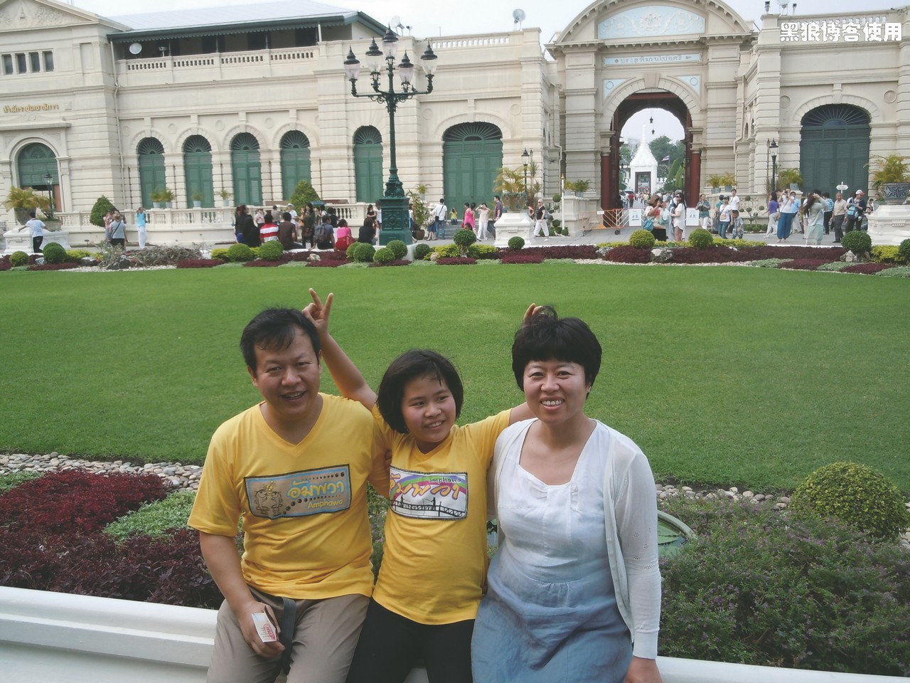
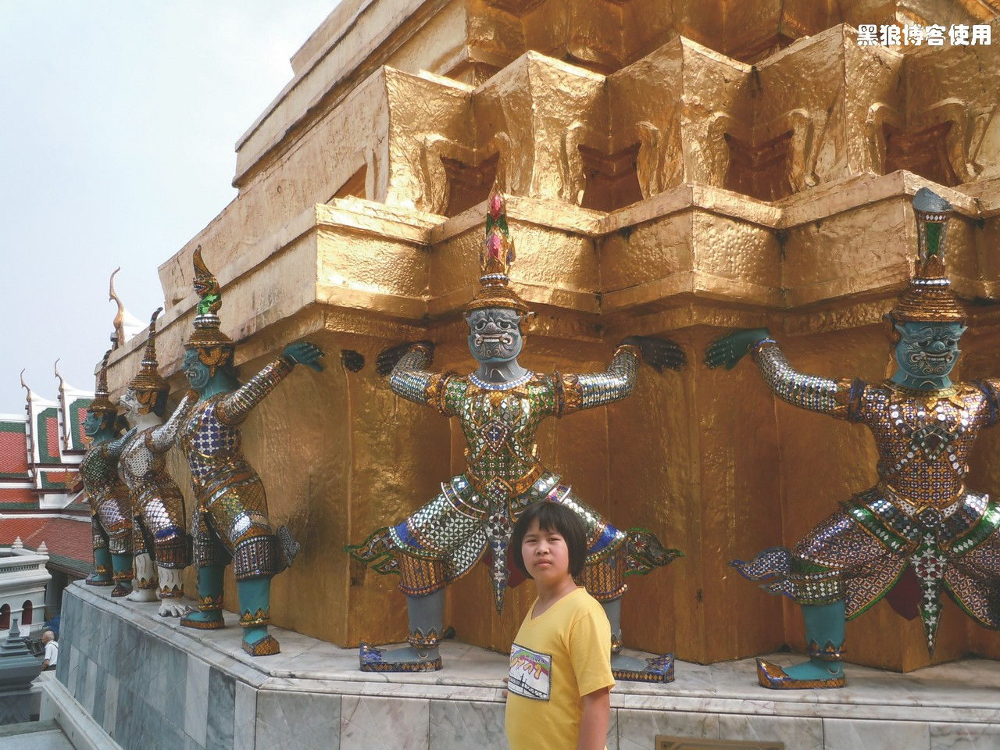
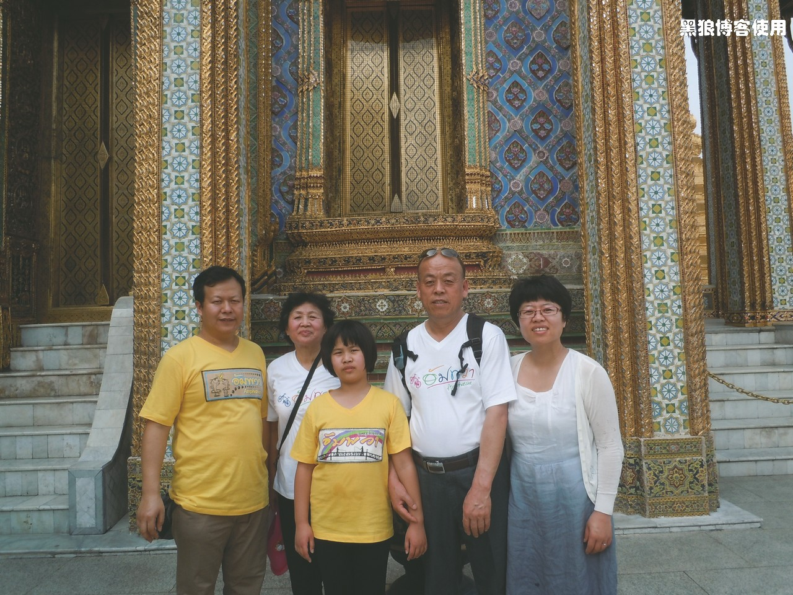
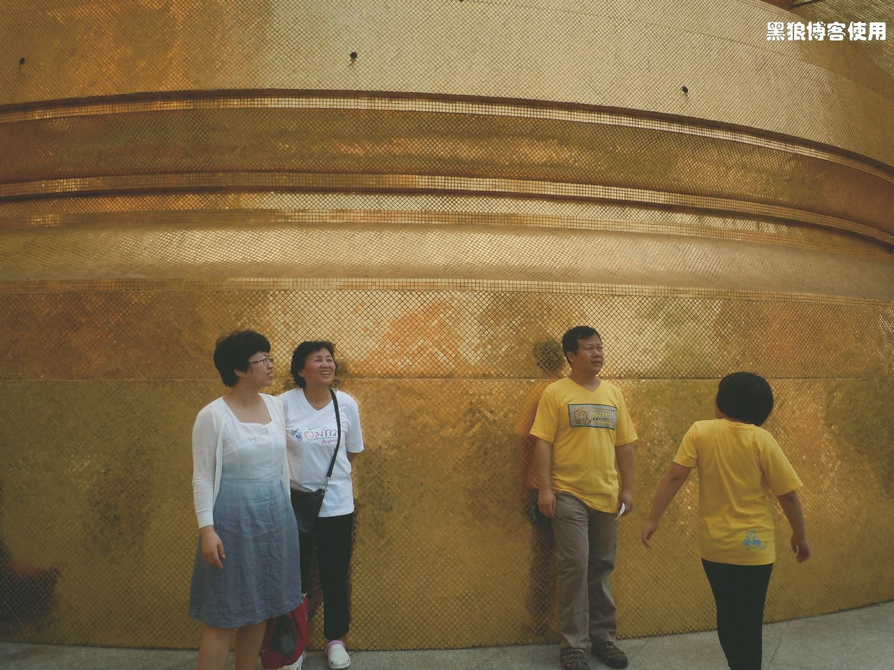
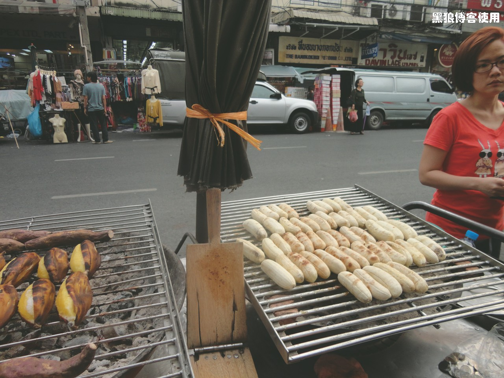

泰国自助游（2）
黑狼语录：
- 出门在外，急！找 2 小时找不到宾馆急 ( 宾馆订好了，找不到地方 )，订 2 小时订不到机票急 ( 机票订好了，付不了款 )，保持好心态不容易
2 月 3 日中午，从安帕瓦返回曼谷，本来要去宾馆老板建议的一个泰式本地餐馆，结果意外关门。旁边发现了一个自助餐厅，每人 250BA，吃！
小豆包也是从这儿开始，成为她姥姥姥爷的英文翻译。第一次是帮助寻找厕所，哈哈。估计也是她第一次开始英语主动跟人交流吧。
下午去了大皇宫，里面到处是金碧辉煌的色彩。需要脱鞋才能进入到殿内，很多人虔诚的拜佛，我也被小豆包洒了好多圣水。
在大皇宫门前的草坪前。

大皇宫内一片金色的建筑。

 
走出大皇宫后，同门前的警卫合影。小豆包不敢上前合影。
大皇宫门前的草坪合影。
从大皇宫出来，我和胡有理直接去火车站买从清迈返回曼谷的火车，体验一下泰国的火车，尽管大家都说泰国的火车比较陈旧，不过看看沿途风光也是不错的。从曼谷去清迈的飞机票早已在国内就买好了。
烤香蕉，品尝了一下，味道不太感冒。
去火车站的路上，走过电子市场一条街，挨着华人街的地方，居然发现了好多成人用品和光盘也在售卖。
曼谷的火车站很小，而且也没有安检措施，候车的人也不多。和售票员说了半天英语，结果没有卧铺了 the 2nd class，只有硬座。售票员推荐我们去 2 楼碰运气，上去后才发现，2 楼是旅行社，有票，但要包括宾馆、清迈的游玩等等套餐才行，放弃，回去订机票！
体验了泰国的公交车，很破旧的，款式也旧的那种公交，马达的声音很大。售票员是个年轻的男孩，穿着拖鞋，笑笑闹闹，前窜后跳。相比较，北京的公交售票员太郑重、太端庄，我也由一开始的惊讶忽然体会到另外的一种随意、平和。
到了宾馆，我跟胡有理开始在网上订机票，发现机票涨了 1 倍多，看来还需要早些预订呀。最悲催的事情就是，订好了票居然无法付款。银行的各种 key没有带在身边，亚航的信用卡付款需要地址信息怎么也通过不了，支付宝、快钱也可以用，但账户里面没有钱，从下午 7 点多到夜里 12 点多，尝试了各种方法，国际长途打了好几个，还是无法付款，无奈放弃。
小豆包中途饿的要吃饭，让姥姥姥爷领着出去自己找地方吃饭去了，她又充当了翻译的角色。
如果是我，早就放弃了，胡有理比较喜欢南墙不回头，一直希望成功付款。对于我的建议：“大不了火车硬座，大不了大巴”，她很气愤，她认为老的老小的小，必须飞机。
半夜我出去找吃的，顺带进 7-11 超市买了 2 瓶啤酒，放松一下，结果发现居然不是啤酒，酒精 8％，不知道是啥酒，没有啤酒的泡泡，凑合着喝吧。酒劲还挺大。
正好碰到酒店老板也在，老板娘是武汉人，嫁到泰国的。聊了会儿天，她说附近有亚航的售票点，可以去直接付款。心情大慰，喝、吃！
4 号一大早就是买机票， 结果要 10 点半才上班，太悠闲了吧。泰国的商店、餐馆，开的都比较晚，也许是晚上营业时间长吧。逛逛考山路吧。
到处有鲜榨水果摊，一般 20-40BA，相当于4-8 元人民币一杯。走一路，喝一路。
搞定机票已经是中午了，回宾馆，准备下午去清迈。
本来还准备去别的地方转的，买大皇宫门票的时候，附带着还有 2 张票，一个是柚木宫的，另一个看不懂不知道是哪里，结果，泰国曼谷大部分景点周一休息，只能等着坐飞机去清迈了。